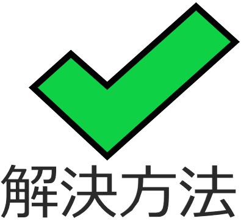

BODY-MAKE APP(SNSアプリ) ※開発中※

開発環境
HTML / css / JavaScript / Ruby / Ruby on Rails / MySQL / GitHub / Render / Visual Studio Code
-
概要
制作時間 ○○時間 URL 近日公開予定 ID 0000 PASS 0000 -
動作テスト
テスト用アカウント
mail test01@com PASS test00
OUTLINEアプリケーションの概要
かっこいい、美しい身体づくりをサポートする、文書、画像の投稿ができるTwitterのようなアプリケーションです。
課題と解決手法
既存のサービスでは日々の身体の写真等を投稿できるが、身体が変化している実感が湧きにくい
 体重データをグラフ表示、画像を比較表示することで視覚的に身体の変化をわかりやすくする
過度な食事制限によるダイエットをしてしまい、不健康な身体になってしまう
ユーザーデータとして各種データを設定することで、摂取カロリー、栄養素を提案する
ユーザーの投稿内容に対し、ユーザーの目的（増量・減量・維持）を理解していないコメントがある
ユーザーの目的を選択して表示することで、あらかじめ今何に取り組んでいるのかを表示できる
-
開発に至った経緯
既存のサービスであるTwitterやInstagram等は、不特定多数のユーザーが存在しており、 身体づくりを楽しむ人たちにとって、意図に反したコメントやダイレクトメールが送られることがあります。
そこで、身体づくりに特化したサービスを提供することで、ユーザーが安心してコミュニケーションをとれることを目的として作成します。 -
開発で工夫したこと

開発中につき、別途記載予定
-
努力した点（カリキュラム外で学習した点）
開発中につき、別途記載予定